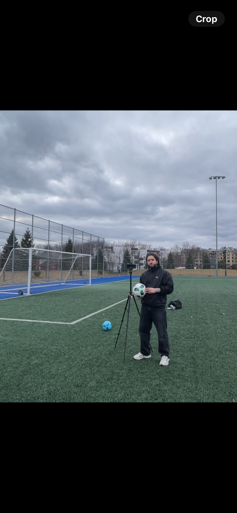

L'analyse sportive par IA, accessible à tous
Replay est une application mobile qui analyse automatiquement les vidéos de matchs et d'entraînements grâce à l'intelligence artificielle. Il suffit de filmer avec un téléphone. L'app détecte les joueurs, suit leurs déplacements, identifie les actions clés et génère des conseils de coaching personnalisés en quelques secondes. Aucun équipement spécialisé nécessaire. Soccer, basketball, volleyball : Replay donne accès à des outils d'analyse qui n'existaient que pour les équipes professionnelles.
Trois étapes. Zéro équipement.
Filme ton match ou entraînement avec n'importe quel téléphone. Aucune caméra spéciale requise.
L'IA détecte chaque joueur, suit les déplacements et identifie les moments clés automatiquement.
Reçois des conseils de coaching personnalisés et des exercices ciblés pour t'améliorer.
Des outils pro, sans le prix pro.
L'IA identifie et suit chaque joueur en temps réel, même en mouvement rapide.
Des recommandations de coaching adaptées au niveau et au style de jeu de chaque joueur.
Soccer, basketball, volleyball — et d'autres sports à venir. Une seule app pour tous.
Ton téléphone suffit. Pas de caméra, capteur ou installation nécessaire.
Les mêmes fonctionnalités. Une fraction du prix.
| Replay | Hudl | Veo | Trace | |
|---|---|---|---|---|
| Version gratuite | ✓ | ✕ | ✕ | ✕ |
| Aucun équipement requis | ✓ | ✕ | ✕ | ✕ |
| Détection IA des joueurs | ✓ | ✓ | ✓ | ✓ |
| Conseils de coaching IA | ✓ | ✕ | ✕ | ✕ |
| Multi-sport | ✓ | ✓ | ✕ | ✕ |
| Prix annuel | Gratuit / 120$ | ~2 400$+ | ~1 200$+ | ~1 800$+ |
Prix approximatifs basés sur les offres publiques en 2025.

J'ai passé des heures à filmer des matchs sans jamais pouvoir en tirer de vraies données. Les outils pro coûtent des milliers de dollars. J'ai construit Replay pour que chaque coach et chaque joueur ait accès à l'analyse qui fait la différence.
Rayane Belhadj
Fondateur, Replay
Inscris-toi pour un accès anticipé. Lancement bientôt.
Invite un coach et remonte dans la liste d'attente. Un lien de parrainage te sera envoyé après ton inscription.